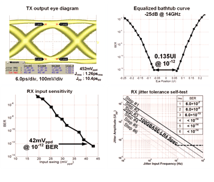

연구성과 10선
연구성과 10선
KAIST RESEARCH ACHIEVEMENTS
친환경 데이터센터 구축을 위한 100Gbps 이더넷 트랜시버 IC
전기및전자공학과 배현민
요약
2020년에는 Full HD/Ultra HD급의 IPTV/모바일 스트리밍 서비스가 보편화되고, 클라우드 서비스 등의 사용이 지속적으로 증가하여 이 대역폭을 뒷받침 해줄 수 있는 기지국 및 데이터센터의 더 높은 대역폭이 필요하게 된다. 끊임없이 증가하는 데이터센터의 전력소모를 줄이는 것은 무엇보다도 중요한 글로벌 이슈가 되는 가운데 개발된 '초저전력100Gbps 이더넷 트랜시버 IC'는 초저전력인 강점을 앞세워 전 세계 기지국이나 데이터센터에 탑재되게 된다. 글로벌수요를 충족함과 동시에, 초저전력으로 인한 전력유지비용 및 CO₂ 배출이 크게 감소하고, 100Gbps 및 400Gbps로의전환이 기존 예상보다 3~4년 더 빨리 앞당길 수 있게 되었다. 한국/미국을 비롯한 인터넷 선진국은 물론 중국/인도 등의 개발도상국에서도 100Gbps급의 인프라 구축이 거의 마무리되어, 인구에 비례한 폭발적인 인터넷 사용량 증가를 충족시키고 있다. 그리고 본 연구실에서는 개발된 기술을 바탕으로 다음 차세대 400Gbps/1Tbps 초저전력 이더넷 트랜시버IC를 시제품으로 개발하여 상용화를 앞두고 있다.
연구내용

전 세계 하루 평균 수십억 건에 달하는 인터넷 검색 결과를 보여주기 위해 데이터센터가 24시간 가동되고 있는데, 2006년 기준 미국데이터 센터의 연간 전력 소비가 전체 전력 소비량의 1.5%(연간 610kWh)에 달하는 것으로 나타났다. 이 같은 추세라면 2020년에는 전체의 10%에 달할 것으로 예상되는 등 데이터센터의 전력 소모에 대한 대책이 요구되고 있다. 그러나 개발된 '초저전력 100Gbps 이더넷 트랜시버 IC' 는 기존 경쟁업체 제품의 소비전력 대비 1/3 수준이고, 기존의 CFP/CFP2 모듈보다 더 작은 CFP4/QSFP28등 초소형 저전력 모듈에 집적이 가능함으로써, 데이터 센터의 그린화를 위한 해결방안이 될 수 있고 데이터 센터의 초기 및 유지 비용절감 효과가 매우 크다.
기대효과
ㆍ100Gbps Ethernet Specification인 IEEE 802.3ba(100GBASE-LR4/ER4)에 호환되며, OIF CEI-28G-VSR specification 또한 만족한다.
ㆍ1W 이하의 파워 소모로 동작하여 CFP4/QSFP28의 소형 모듈 구현에 적합하다.
ㆍ한 IC에 8개의 RX lane과 8개의 TX lane으로 구성되어 있으며, 각 lane은 25.0Gbps ~ 28.3Gbps의 Data Rate에서 BER < 10-15 구현
ㆍReference-less(크리스탈 등을 사용한 외부의 기준 클럭 없이 순수하게 입력 데이터만을 이용하여 클럭과 데이터를 복원)
ㆍMaster-less(Master/Slave lane의 구분없이 어느 lane에서 데이터가 들어와도 동작가능)
ㆍ20dB lossy channel에 대해 보상
ㆍProgrammable pre-emphasis 및 output waveform shaping 지원
ㆍOn-chip jitter tolerance testability ㆍBIST(Built-in Self-Testing)을 위한 PRBS Generator/Checker 탑재, Loop-back, Lane Swapping 기능 제공 ㆍ40nm CMOS 로 제작, 2.7×2.7㎟
 그림 2. Linecard와 CFP Module
그림 2. Linecard와 CFP Module
 그림 3. TX/RX 측정결과
 그림 4. 측정 셋업: 두 칩간의 데이터 전송
그림 4. 측정 셋업: 두 칩간의 데이터 전송
측정 결과 및 결론
두 칩간의 데이터 전송이 제대로 이루어 졌는지 확인하였다. 측정 환경은 Core VDD 0.9V에서 28.0Gbps PRBS 231-1 패턴을 이용하였다. 측정결과, 비트 에러 전송률(BER)은 10-15 이하로 나왔으며, 이때의 전체 칩파워는 870mW이며, 파워효율은 약 3.9mW/Gb/s로서, 현재까지 발표된100Gbps 트랜시버 논문들 중 가장 효율이 높다.
기대효과
순수 국내기술로 개발된 이 IC는 데이터센터 구축시초기 및 유지 비용절감에 매우 큰 장점이 있고 저전력으로 인한 친환경 IC 이다. 그리고 이 기술을 바탕으로, 앞으로 나올 차세대 400Gbps/1Tbps 이더넷 통신규격에도 적합한 저전력 IC 개발이 손쉽게 가능하며,기타 모든 고속유선통신을 이용한 어플리케이션(Eth-ernet, USB, SATA, Displayport, PCIe, Memory interface, UDTV interface등)에도 활용 가능한 기술이다.
연구비 지원
ㆍ(주)테라스퀘어와 공동연구 진행
연구실적
ㆍSignal pattern and dispersion tolerant statistical reference oscillator, US Patent
ㆍClock recovery, receiver, and communication system for multiple channels, US Patent
ㆍLow-power and all-digital phase interpolator based clock and data recovery architecture, US Patent
ㆍA low-power highly-accurate passive multiphase clock generation scheme by using polyphase filters, US Patent
ㆍLow-power cml-less transmitter architecture, US Patent ㆍPhase interpolator based output waveform synthesizer for low-power broadband transmitter, US Patent
ㆍ제14회 대한민국 반도체 설계대전 대통령상 수상, 2013.10
ㆍEuropean Conference and exhibition on Optical Communication(ECOC) 2013 제품 시연
ㆍ국내언론보도 16건